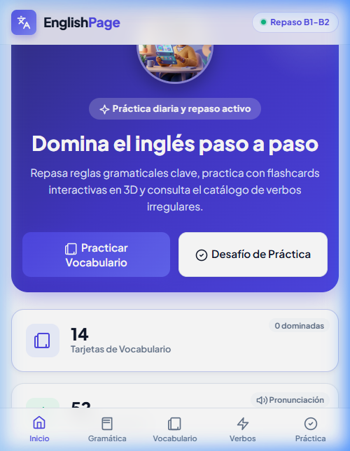
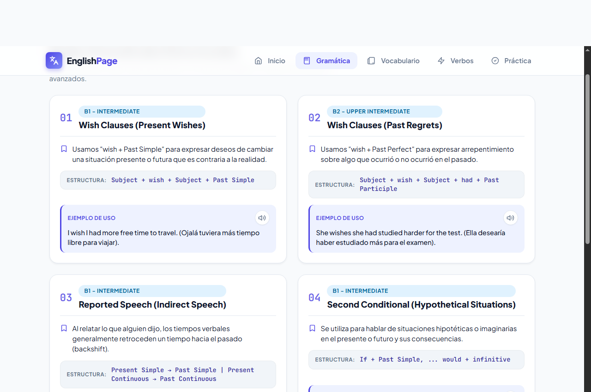
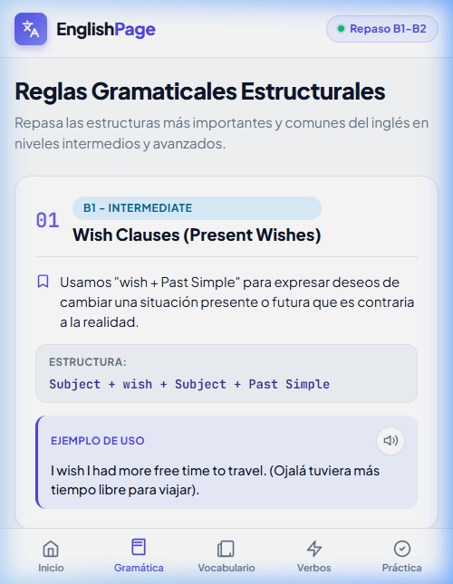
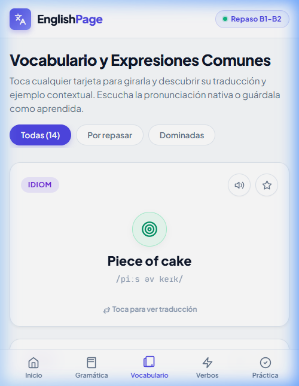
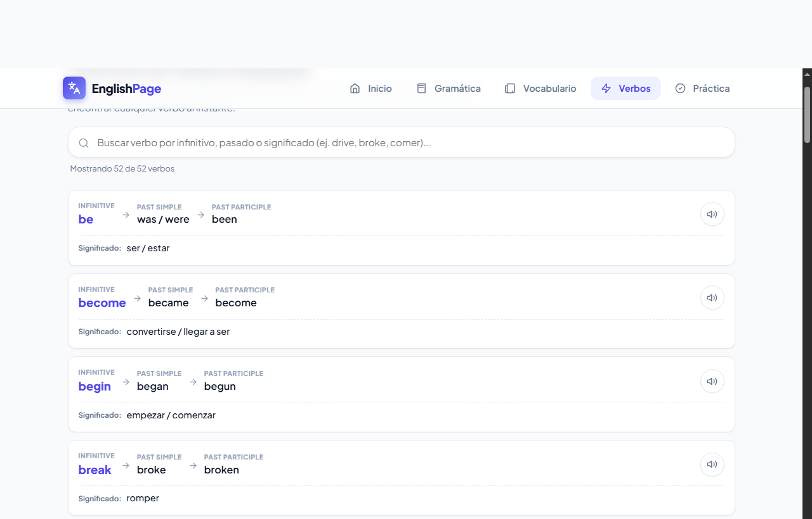
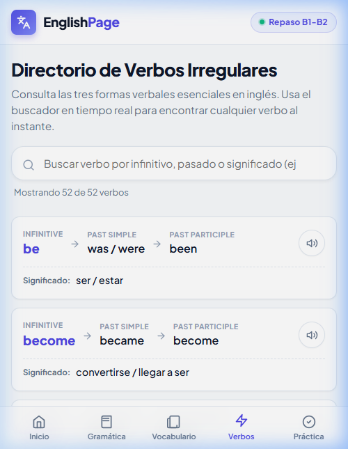
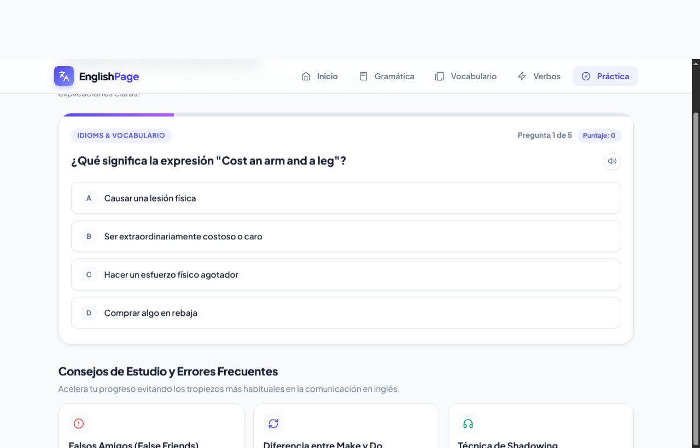
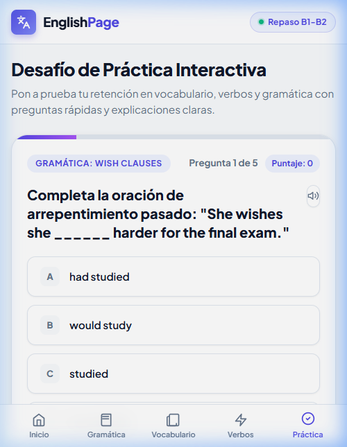

Introducción y Objetivo de la Aplicación
1.1 Contexto y Justificación
El aprendizaje de segundas lenguas exige retroalimentación inmediata, consistencia en la práctica y accesibilidad desde cualquier dispositivo móvil o de escritorio. En el marco del curso Plataformas Emergentes, este proyecto responde a la necesidad de construir una solución contemporánea orientada a teléfonos inteligentes que no dependa de frameworks monolíticos, garantizando tiempos de carga casi instantáneos, bajo consumo de recursos y máxima adaptabilidad responsive.
1.2 Objetivo General
Diseñar, desarrollar y desplegar una aplicación web local responsive orientada a dispositivos móviles para el repaso dinámico de gramática, vocabulario idiomático y verbos irregulares en inglés, aplicando patrones de arquitectura SPA, persistencia local en el navegador y microinteracciones táctiles nativas.
1.3 Objetivos Específicos
- Diseño Mobile-First ergonómico: Barra de navegación inferior táctil (Thumb Zone) en móviles que transmuta a barra superior fija en escritorio.
- Arquitectura SPA sin recarga: Cinco secciones funcionales navegables mediante enrutamiento declarativo por hash (#inicio, #gramatica, #vocabulario, #verbos, #quiz).
- Generación dinámica: Gestión de estado, filtros en tiempo real, cálculo de puntaje y persistencia en
localStoragecon JavaScript Vanilla ES6+ modular. - Experiencia sensorial: Integración de la Web Speech API nativa para pronunciación en inglés y tarjetas tridimensionales aceleradas por hardware (GPU).
Tecnologías Utilizadas y Justificación Técnica
La aplicación fue construida respetando estrictamente las directrices de la asignatura, empleando tecnologías estándar web sin incorporar frameworks que desnaturalicen la enseñanza de los fundamentos de plataformas emergentes:
| Tecnología | Versión / Estándar | Rol en la Solución | Justificación |
|---|---|---|---|
| HTML5 | Semántico W3C | Estructura SPA | Etiquetas semánticas (header, main, nav, section), atributos ARIA y metatag viewport-fit=cover. |
| CSS3 Puro | Flexbox · Grid · Custom Properties | Estilos y Animaciones 3D | Cero dependencias (sin Tailwind ni Bootstrap). Variables CSS para temas, perspective y rotateY(180deg) acelerados por GPU, y Media Queries fluidas. |
| JavaScript | ES6+ Vanilla Modular | Lógica de Negocio | Módulos (import/export), delegación de eventos, Web Speech API nativa para pronunciación en inglés y persistencia local sin servidor (localStorage). |
| Vite | v5.4.x | Entorno de Desarrollo y Build | Servidor HMR ultrarrápido mediante módulos ES nativos y empaquetado optimizado para producción. |
| Git & GitHub | Control de Versiones | Repositorio y Despliegue | Historial de commits descriptivo y publicación pública del código fuente con README técnico formal. |
Estructura y Arquitectura del Proyecto
El proyecto adopta el patrón de Separación de Responsabilidades (SoC), aislando datos, renderizado, almacenamiento y navegación en módulos independientes y reemplazables:
englishPage/
├── index.html # Contenedor raíz SPA con las 5 secciones declarativas
├── package.json # Metadatos del proyecto y comandos (dev · build · preview)
├── vite.config.js # Configuración del servidor de desarrollo y puertos locales
├── README.md # Manual de instalación y documentación técnica
├── docs/
│ ├── informe.html # Documento fuente del informe académico (este documento)
│ └── screenshots/ # Galería de capturas en móvil y escritorio
└── src/
├── css/
│ ├── variables.css # Paletas de color HSL, radios de borde y tokens de diseño
│ ├── base.css # Reseteo responsive, tipografía y utilidades globales
│ ├── layout.css # Header fijo, barra superior y barra táctil móvil inferior
│ ├── cards.css # Flashcards 3D, badges SVG, reglas gramaticales y tablas
│ └── main.css # Agregador central de hojas de estilo (punto de entrada CSS)
└── js/
├── data.js # Datos puros: 14 tarjetas, reglas gramaticales, verbos
├── icons.js # Librería de íconos vectoriales SVG propios (sin emojis)
├── speech.js # Motor de síntesis de voz nativa en inglés (Web Speech API)
├── storage.js # API de persistencia en localStorage (tarjetas aprendidas)
├── navigation.js # Enrutador SPA reactivo al evento hashchange
├── render.js # Inyectores dinámicos del DOM para cada sección
└── main.js # Punto de entrada y ciclo de vida de la aplicación
3.1 Patrón de Enrutamiento por Hash
La navegación entre secciones opera mediante el evento nativo hashchange del navegador. Cuando el
usuario pulsa un enlace de navegación, el módulo navigation.js lee el nuevo fragmento de URL
(e.g. #vocabulario), oculta la sección activa y revela la sección destino. Esto elimina cualquier
recarga de página, produciendo transiciones instantáneas equivalentes a una aplicación nativa.
3.2 Persistencia Local sin Backend
El módulo storage.js encapsula todas las operaciones de lectura y escritura sobre
localStorage. El estado de las tarjetas marcadas como "dominadas" persiste entre sesiones sin
requerir servidor, autenticación ni conexión a internet.
Principios de Diseño Móvil y Enfoque Responsive
4.1 Zona Ergonómica del Pulgar (Thumb Zone Navigation)
En dispositivos con pantallas superiores a 6 pulgadas, la navegación en la parte superior genera fatiga muscular.
La aplicación implementa una barra de navegación inferior fija (.mobile-bottom-nav)
que ubica los 5 accesos directos al alcance inmediato del pulgar, con áreas táctiles mínimas de 48×48 píxeles
conforme a las guías WCAG 2.1 y Material Design. En resoluciones superiores a 768 px (tabletas apaisadas y
escritorios) esta barra se oculta fluidamente y se activa la barra superior tradicional.
4.2 Adaptabilidad de la Sección de Gramática
La sección de gramática responde con precisión en el rango completo de tamaños de pantalla:
- Dispositivos móviles (320–767 px): Tarjetas en columna vertical única con tipografía fluida y cajas de fórmulas con
overflow-wrap: break-wordque impiden desbordamiento horizontal. - Escritorio (≥ 860 px): Las tarjetas transmutan a una rejilla adaptativa de dos columnas (
grid-template-columns: repeat(2, 1fr)) para visión comparativa simultánea.
4.3 Iconografía Vectorial Conceptual (Cero Emojis)
Para evitar la apariencia genérica de los emojis, se desarrolló una librería propia de íconos SVG vectoriales
en icons.js. Cada ícono representa la interpretación figurativa real de la expresión idiomática
(diana = precisión/facilidad para Piece of cake; candado abierto = revelar un secreto para
Spill the beans).
4.4 Animaciones 3D con Aceleración por Hardware
Las flashcards de vocabulario emplean CSS 3D puro: transform-style: preserve-3d,
perspective: 1000px y backface-visibility: hidden. El procesamiento del
volteo se delega a la GPU del dispositivo móvil, manteniendo una tasa constante de 60 fps.
@media (max-width: 767px) — Layout móvil: columna única, barra inferior, tipografía compacta.@media (min-width: 768px) — Layout tablet: barra superior, ajuste de espaciado.@media (min-width: 860px) — Layout escritorio: rejilla 2 columnas en gramática, grid vocab multicolumna.
Descripción de las Secciones y Galería de Capturas
5.1 Inicio — Dashboard del Estudiante
Presenta un panel de control con estadísticas de estudio en tiempo real (porcentaje de dominio de tarjetas, total de verbos y reglas), un banner hero con imagen ilustrativa y accesos directos a las secciones de práctica.


5.2 Gramática — Reglas Estructuradas en Tarjetas Interactivas
Organiza los tiempos y estructuras gramaticales esenciales del nivel B1–B2 (Wish Clauses, Conditionals, Present Perfect). En escritorio se presenta en rejilla de 2 columnas y en móvil en columna vertical individual con fórmulas bilingües y botones de audio nativo por ejemplo de uso.


5.3 Vocabulario — Flashcards 3D con Insignias Vectoriales
Contiene 14 flashcards tridimensionales interactivas con expresiones idiomáticas. Cada tarjeta incluye
una insignia SVG conceptual, botón de pronunciación nativa en inglés y botón de guardado sincronizado
con localStorage. Al tocarse, la tarjeta gira 180° mostrando la traducción y oración de contexto.

5.4 Verbos Irregulares — Directorio con Búsqueda en Tiempo Real
Catálogo completo de verbos irregulares con sus tres formas fundamentales (Infinitive → Past Simple → Past Participle) y traducción al español. Integra un motor de filtrado instantáneo que busca simultáneamente en inglés y español conforme el usuario escribe.


5.5 Práctica — Quiz Interactivo con Retroalimentación Pedagógica
Módulo de evaluación formativa con temporizador, barra de progreso porcentual, retroalimentación pedagógica instantánea (explicación de aciertos y errores por cada respuesta) y pantalla final con cálculo de porcentaje y recomendación de estudio personalizada.


5.6 Galería Responsive — Las 5 Secciones en Vista Móvil
A continuación se presentan en paralelo las cinco secciones de la aplicación renderizadas en un viewport de 390 px (iPhone 14 Pro), evidenciando la barra de navegación inferior, el diseño compacto y la consistencia visual del sistema de diseño Mobile-First:
Conclusiones y Recomendaciones
6.1 Conclusiones
- Eficiencia del Enfoque Vanilla: La construcción con APIs nativas del navegador (HTML5, CSS3 y JavaScript modular) demuestra ser una alternativa sumamente viable frente a frameworks pesados para plataformas emergentes, logrando tiempos de interacción menores a 50 ms y un peso total inferior a 50 KB.
- Ergonomía Móvil Centrada en el Usuario: La barra de navegación inferior adaptada a la zona natural del pulgar (Thumb Zone) mejora drásticamente la comodidad del usuario frente a los menús desplegables superiores en smartphones modernos.
- Diseño Adaptativo Robusto: La combinación de rejilla adaptativa de 2 columnas en escritorio y disposición vertical elástica en móviles permite que contenidos complejos como fórmulas gramaticales se consuman óptimamente sin desbordamientos ni desplazamiento horizontal.
- Consistencia Estética e Iconográfica: La sustitución de emojis por íconos vectoriales SVG conceptuales elevó el nivel profesional de la interfaz gráfica, otorgando un aspecto contemporáneo, coherente y escalable a cualquier resolución.
- Accesibilidad y Multimedia Nativa: La integración de la Web Speech API dota a la aplicación web de síntesis de voz nativa sin almacenar archivos de audio pesados ni requerir servidor backend.
6.2 Recomendaciones Futuras
- Integrar un Service Worker y
manifest.jsonpara convertir la solución en una PWA instalable con soporte 100% offline. - Implementar SpeechRecognition API para que los usuarios puedan practicar y evaluar su propia pronunciación en inglés frente al micrófono.
- Añadir una base de datos ligera (IndexedDB) para soportar múltiples usuarios y estadísticas de progreso histórico por estudiante.
git clone https://github.com/JoseGordilloMendoza/englishPage.gitInstalar dependencias:
npm install · Iniciar servidor: npm run devAcceder desde el navegador en
http://localhost:3001 (o el puerto asignado por Vite).